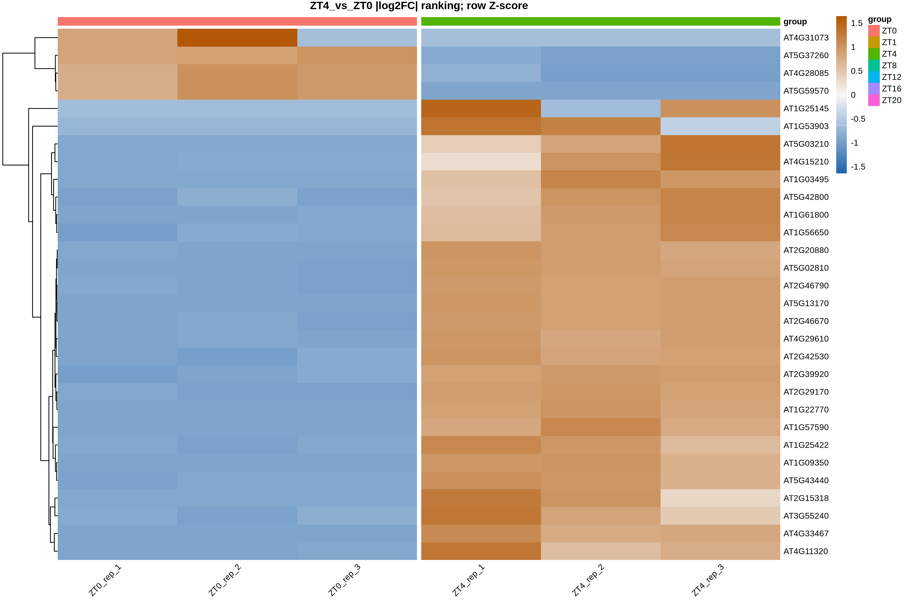

V9 最新资料的包内副本 · 原始文件按字节复制。网页适配本地链接；没有精选收录的结果显示说明。代码用于延伸阅读，实际分析需要完整输入与环境。
13 Top 基因热图
输入字段和项目迁移规则见输入规范。代码从能看到 0script 的项目根目录运行。
热图将选定基因在各样本中的表达模式放在一起比较。本章沿用按 |log2FoldChange| 排序选 Top 基因的思路；Top 表示排名靠前，不自动等于显著差异。图中显示的是行标准化后的表达量，不是相关系数。
本章从哪里读取参数
以下值来自 ../case/0script/project.env，不是写死在函数里的常量。案例值与新项目模板值分别列出；实际运行读取你当前文件中的设置。图形特有参数仍在本章入口集中设置。修改后需重新运行读取/赋值段，再调用函数；已经在内存中的旧变量不会随文件编辑自动刷新。
| 参数 | 当前案例配置 | 空模板默认 | 用途与修改注意 |
|---|---|---|---|
TMM_MATRIX |
3Salmon/quanti/gene.TMM.EXPR.matrix |
3Salmon/quanti/gene.TMM.EXPR.matrix |
第 09、13 章等展示使用的 TMM 表达矩阵路径。 换输入时填写实际 TMM；路径不是自动转换命令，缺少时先准备该矩阵或跳过需要它的步骤。 |
DE_RESULT_FILE |
5DESeq2/de_result.tsv |
5DESeq2/padj0.05_lfc1/de_result.tsv |
第 11–15、19–20 章读取的合并差异结果表。 第 10 章重新汇总后更新为实际新文件；更改阈值不会自动把旧表搬到新目录。 |
1. 保留的选择
Top30 保存有行名、无行名、有数值、无样本注释及分组留白等样式；另外保留 Top100 和 Top300 的概览。原稿中参数完全相同的重复图合并，行 Z-score 使用以 0 为中心的发散色，保留两套可选配色。
| 参数 | 解释 |
|---|---|
top_num |
最多选择多少个有限检验结果，不足时使用实际数量 |
show_values |
是否显示行 Z-score，不是相关系数 |
show_rownames |
是否显示基因 ID |
annotate |
是否显示样本组别色条 |
group_gaps |
按样本表中的实际分组边界插入留白，不假定每组永远 3 个样本 |
sample_scope |
全部样本，或只看该比较的两组样本 |
palettes |
blue_orange/red_blue 两套发散色；可只选其中一套 |
top_num / overview_top_nums |
默认细节图 30、概览图 100/300；改变数量后重新选行和绘图，不重做 DESeq2 |
plot_width / fontsize |
默认宽 12 英寸、字号 8；图高根据行名数量自动调整 |
output_root |
默认 8topgene_pheatmap；内部按比较/Top 数/样本范围/样式和配色分目录 |
variant_label |
默认空；同样式另改字号或画布时设为如 larger_font，给结果另加标签，不覆盖原文件 |
上表的 show_values/show_rownames/annotate/group_gaps/sample_scope 是既有样式内部的开关，不是下方 run_top_heatmaps() 的公开参数。入口会输出这些预定样式供选择，不要把这些名字直接加到调用中。其中 TRUE 表示显示数值、基因名、组别色条或组间留白，FALSE 表示不显示；sample_scope="all" 使用全部样本，"comparison" 只用当前比较的两组，并在该范围重新做行标准化。
2. 准备输入与参数
实现：查看编号脚本。
# 目的：批量保存详细与概览 Top 基因热图的多种样式。
# 关键输出：output_root/比较ID/top数量/样本范围/样式_配色[__标签]/。
# 如 8topgene_pheatmap/比较ID/top30/all/labels_blue_orange/，内含 selected_genes.tsv、row_zscore.tsv。
# 图名为 样式_配色.png/.pdf；零方差记录另存 zero_variance_omitted.tsv，无法作图时写 NO_GENES.txt。
# 运行位置：项目根目录（能看见 0script）；在本章指定环境的 R 中执行。
# 输出/边界：在 output_root 下按比较和样式保存文件；保留标签、数值与配色选择，不重新检验差异。
# 共用读取：readRenviron 读取 project.env；Sys.getenv 返回文本，as.numeric/as.integer 将阈值/种子转成数值。
# 更改配置后需重新执行读取与赋值，旧变量不会自动刷新。
# 参数设置（下方为本次取值；不需要修改函数内部实现）：
# comparison_ids：字符向量或 NULL，比较 ID 必须来自 contrasts.tsv 且已有差异结果。
# NULL：处理全部启用比较；"Treat_vs_Control"：只处理这一个真实 ID。
# c("A_vs_Control", "B_vs_Control")：只处理列出的多个比较，名称只是写法示例。
# 不按文件名拆组，不用 ""、NA 或 character() 代替“全部”；换项目从自己的比较表取值。
# top_num：正整数；按绝对 log2FC、padj、基因 ID 依次排序后取前 N 个有有效检验值的基因，再核对表达矩阵。不是先取 N 个显著基因，不能把入图等同显著。
# overview_top_nums：正整数向量；概览热图的多个 Top 基因数量，如 c(100,300) 各出一套。选择依据与top_num 相同，不改变 DESeq2 结果。
# palettes：单选或多选 c("blue_orange", "red_blue")，只改变热图的发散配色。
# "blue_orange"：低值蓝、高值橙；"red_blue"：低值蓝、高值红；中间浅色对应接近 0 的行 Z-score。
# 两者共享行标准化值，不表示两个不同的表达分析。
# plot_width：正数，单位英寸；输出图宽。增大可缓解标签拥挤，不改变统计筛选。
# fontsize：正数；pheatmap 的基础字号，默认 8。图内文字多时调小或同时增大图幅，不影响数据。
# output_root：字符路径；本步骤输出根目录，函数再按比较/参数建立子目录。通常沿用；试算可选新目录，但后续读取位置不会自动更新。
# variant_label：一个文本标签，默认 "" 表示不加额外后缀；如 "large_font" 会给末级结果目录加 __large_font。
# 非空时只用字母、数字、点、下划线、短横线，首字符为字母或数字；不填路径、空格或 NA。
# 调整未进入目录名的图幅、字体等时用不同标签另存；标签本身不改变计算参数。
# 它不是强制覆盖开关：同一路径参数冲突仍停止，不修改旧结果清单。
# 调用：先加载脚本，再设置参数，最后运行函数。改值后重新执行赋值和调用。
source("0script/tools/metadata.R")
source("0script/tools/outputs.R")
readRenviron("0script/project.env")
source("0script/scripts/13_top_heatmaps.R")
comparison_ids <- NULL
top_num <- 30
overview_top_nums <- c(100, 300)
palettes <- c("blue_orange", "red_blue")
plot_width <- 12
fontsize <- 8
output_root <- "8topgene_pheatmap"
variant_label <- ""
# interface-parameters: top_heatmaps
run_top_heatmaps(
comparison_ids = comparison_ids,
top_num = top_num,
overview_top_nums = overview_top_nums,
palettes = palettes,
plot_width = plot_width,
fontsize = fontsize,
output_root = output_root,
variant_label = variant_label
)
查看本步关键文件
默认查看本次第一个比较、第一套配色、全样本带行名样式。selected_genes 保留原检验字段；row_zscore 为真正入图的行标准化值，不是原始 TMM 或相关系数。
# 目的：只读当前参数路径的关键文本；留在上一框的 R 会话，不重新分析。
# 前提：上一分析已成功或明确提示完整结果复用；若报错/冲突，先处理，不把旧文件当本次成功结果。
# preview_dir/preview_files 只用于查看，不是传给分析函数的新参数。
# file.path 拼接路径；readLines(n = 10) 最多读前 10 行，含表头；不整表读入内存。
# file.exists 检查是否存在；cat 用 sep = "\n" 逐行显示；warn = FALSE 省略末行换行提示。
# nzchar 判断标签是否非空；非空时按原命名规则在末级目录加 __标签。
preview_comparisons <- read_contrasts()
preview_ids <- if (is.null(comparison_ids)) preview_comparisons$contrast_id[preview_comparisons$enabled] else comparison_ids
stopifnot(length(preview_ids) > 0)
preview_id <- preview_ids[1]
cat("示例比较：", preview_id, "\n")
preview_dir <- file.path(output_root, preview_id, paste0("top", top_num), "all", paste0("labels_", palettes[1]))
if (nzchar(variant_label)) preview_dir <- paste0(preview_dir, "__", variant_label)
preview_files <- file.path(preview_dir, c("selected_genes.tsv", "row_zscore.tsv", "zero_variance_omitted.tsv"))
for (preview_file in preview_files) {
cat("\n文件：", preview_file, "\n")
if (file.exists(preview_file)) {
cat(readLines(preview_file, n = 10, warn = FALSE), sep = "\n")
} else {
cat("尚无此文件：核对上一步是否完成、是否选择该分析，以及空结果提示。\n")
}
}
4. 调用：单个样式与完整样式集
下面是独立可选示例，加载、参数和调用均已列全；与上面的完整样式集任选其一，不自动执行。
# 目的：按本节的单次选择运行；这是独立可选示例，不必接在批量分析后执行。
# 关键输出：output_root/比较ID/top数量/样本范围/样式_配色[__标签]/。
# 如 8topgene_pheatmap/比较ID/top30/all/labels_blue_orange/，内含 selected_genes.tsv、row_zscore.tsv。
# 图名为 样式_配色.png/.pdf；零方差记录另存 zero_variance_omitted.tsv，无法作图时写 NO_GENES.txt。
# 输入与输出：使用同一份项目配置和规范输入；输出根目录由下方 output_root 明确指定。
# 文件命名、全部参数的取值含义及限制见本章紧邻的完整参数入口与结果说明。
# 下方把全部公开参数列出，常改项在前，通常沿用项在后；不需要改函数体。
# source 加载函数；readRenviron 先读取配置，保证阈值和种子取自当前项目。
# comparison_id/selected_ids：由比较表取示例 ID，须核实所选比较已启用且已有结果。
source("0script/tools/metadata.R")
source("0script/tools/outputs.R")
readRenviron("0script/project.env")
source("0script/scripts/13_top_heatmaps.R")
comparison_id <- with(read_contrasts(), contrast_id[enabled][1])
# 本例选择：可以在此更换比较、分析内容和输出位置。
comparison_ids <- comparison_id
top_num <- 50
palettes <- "blue_orange"
output_root <- "8topgene_pheatmap/custom"
# 通常沿用：数值与原函数默认行为一致；需要调整时仍在这里修改。
overview_top_nums <- c(100, 300)
plot_width <- 12
fontsize <- 8
variant_label <- ""
run_top_heatmaps(
comparison_ids = comparison_ids,
top_num = top_num,
overview_top_nums = overview_top_nums,
palettes = palettes,
plot_width = plot_width,
fontsize = fontsize,
output_root = output_root,
variant_label = variant_label
)
查看本步关键文件
默认查看本次第一个比较、第一套配色、全样本带行名样式。selected_genes 保留原检验字段；row_zscore 为真正入图的行标准化值，不是原始 TMM 或相关系数。
# 目的：只读当前参数路径的关键文本；留在上一框的 R 会话，不重新分析。
# 前提：上一分析已成功或明确提示完整结果复用；若报错/冲突，先处理，不把旧文件当本次成功结果。
# preview_dir/preview_files 只用于查看，不是传给分析函数的新参数。
# file.path 拼接路径；readLines(n = 10) 最多读前 10 行，含表头；不整表读入内存。
# file.exists 检查是否存在；cat 用 sep = "\n" 逐行显示；warn = FALSE 省略末行换行提示。
# nzchar 判断标签是否非空；非空时按原命名规则在末级目录加 __标签。
preview_comparisons <- read_contrasts()
preview_ids <- if (is.null(comparison_ids)) preview_comparisons$contrast_id[preview_comparisons$enabled] else comparison_ids
stopifnot(length(preview_ids) > 0)
preview_id <- preview_ids[1]
cat("示例比较：", preview_id, "\n")
preview_dir <- file.path(output_root, preview_id, paste0("top", top_num), "all", paste0("labels_", palettes[1]))
if (nzchar(variant_label)) preview_dir <- paste0(preview_dir, "__", variant_label)
preview_files <- file.path(preview_dir, c("selected_genes.tsv", "row_zscore.tsv", "zero_variance_omitted.tsv"))
for (preview_file in preview_files) {
cat("\n文件：", preview_file, "\n")
if (file.exists(preview_file)) {
cat(readLines(preview_file, n = 10, warn = FALSE), sep = "\n")
} else {
cat("尚无此文件：核对上一步是否完成、是否选择该分析，以及空结果提示。\n")
}
}
批量段保留各合理样式，每一行的名称与开关对应；与上述单次示例任选其一。style_name 只负责文件名，不能代替实际的显示开关。
5. 解读边界
同一个基因在各样本中的颜色表示相对本行均值的高低。两个基因同为红色，不代表它们的绝对表达量相同。只显示两组样本时会重新计算这两组范围内的行 Z-score，因此不能直接拿它的颜色深浅与全样本热图做数值比较。
Top 基因表保留 padj 和差异方向，可核对是否显著。完整矩阵保存在 row_zscore.tsv；数值标签必须与该表一致。
6. 本次结果与样式选择
以 ZT4_vs_ZT0 为例，先在该比较有有限检验结果的基因中按绝对 log2FC 排序，再展示 Top30 在全部 21 个文库中的表达模式。这里没有预先加显著性筛选；是否达到阈值要查看配套的 padj 和方向列。下面保留基因名、数值标签、配色和组间分隔的不同选择；完整 PDF 与 PNG 同目录保存。
| 基因名、蓝橙配色 | 数值标签、蓝橙配色 |
|---|---|
| 带基因名的 Top30 热图教学包未精选收录这张完整项目图形：../8topgene_pheatmap/ZT4_vs_ZT0/top30/all/labels_blue_orange.png | 带行 Z-score 数值的 Top30 热图教学包未精选收录这张完整项目图形：../8topgene_pheatmap/ZT4_vs_ZT0/top30/all/numbers_blue_orange.png |
| 不显示基因名、红蓝配色 | 按时间组分隔、蓝橙配色 |
|---|---|
| 简洁 Top30 热图教学包未精选收录这张完整项目图形：../8topgene_pheatmap/ZT4_vs_ZT0/top30/all/clean_red_blue.png | 按组分隔的 Top30 热图教学包未精选收录这张完整项目图形：../8topgene_pheatmap/ZT4_vs_ZT0/top30/all/group_gaps_blue_orange.png |
只保留参与比较的 6 个文库时，可更清楚地看两组差异；全样本图则用于观察这些基因在其他时期的表现。两图用途不同，不用其中一张替代另一张。

Top100/Top300 的概览和无分组注释样式也已保存，目录与含义见 结果文件说明完整项目文件未收录：../8topgene_pheatmap/README.md。